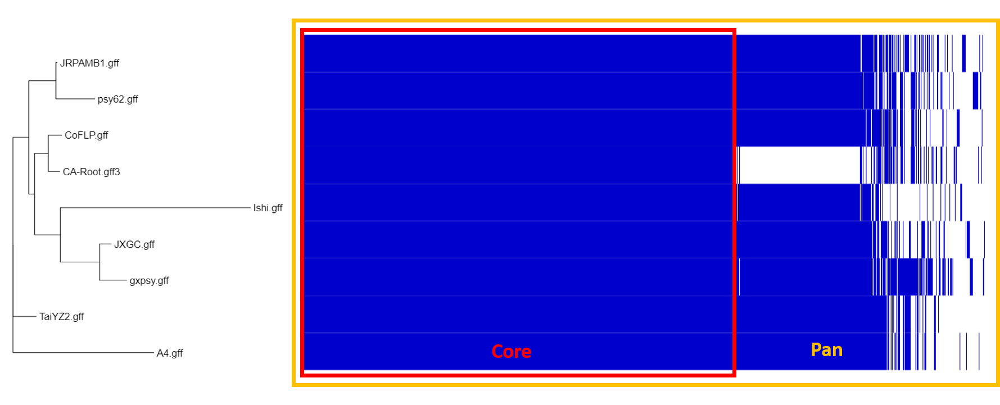

Generate a Phylogeny¶
Lecture¶
Introduction¶
Phylogentic analysis can help elucidate pathogen origins and whether there were multiple versus single introduction events an the potential source. Here, we will build a phylogenetic tree including our newly assembled genome, and genomes publicly available on NCBI.
Annotate Genome¶
The first step in building a phylogeny is annotating our newly assembled genome. Here we will use the program Prokka to identify features of interest in our genome.
Hands-On: Genome Annotation
At the top of the Tools panel (on the left), search for ‘prokka’ and click on it.
Run Prokka with the following parameters (leave everything else unchanged):
contigs to annotate:
Length filtered genome assembly
Rename the gff file produced by prokka.
Find the prokka output ending in “.gff”, click on the pencil icon next to it to edit attributes
Rename to
CA-root.gff3
Once prokka had finished, you should have the following files produced:
The GFF and GBK files contain all of the information about the features annotated (in different formats.)
The .txt file contains a summary of the number of features annotated.
The .faa file contains the protein sequences of the genes annotated.
The .ffn file contains the nucleotide sequences of the genes annotated.
How many coding sequences (CDS) were found in out assembled genome?
By looking at the summary .txt file, you should see we annotated ~1067 CDS.
Pan-Genome with Roary¶
In order to build our phylogeny, we need to know which genes are shared and which are unique across the genomes we are interested in. For the sake of time, we will only be working with the 8 compete HLB genomes available on NCBI. We will use the program Roary, which takes annotation files (gff) and calculates the pan genome.
Hands-On: Pan-Genome Analysis
At the top of the Tools panel (on the left), search for ‘roary’ and click on it.
Under select gff inputs to Roary, click the
upload datasetsicon.Select ‘Choose local files’ and select all gff files in the ncbi-genomes directory you should have downloaded from CloudShare
Make sure all gff files you just uploaded, and the CA-root.gff3 files are highlighted (Ctrl+click until highlighted blue)
Execute with default parameters.
When the program completes running, download the result file end in ‘Gene Presence Absence’ to your computer and rename it to ‘presence-absence.csv’
How many core genes were found among the genomes?
By looking at the summary statistics file, you should see 770 core genes found.
What does Roary do?
converts coding sequences into protein sequences
clustered these protein sequences by several methods
further refines clusters into orthologous genes
for each sample, determines if gene is present/absent: produces gene_presence_absence.csv
uses this gene p/a information to build a tree, using FastTree: produces accessory_binary_genes.fa.newick
overall, calculates number of genes that are shared, and unique: produces summary_statistics.txt
aligns the core genes (if option used, as above) for downstream analyses
Infer phylogeny¶
Here, we will infer the phylogeny using core gene snps.
Hands-On: Phylogeny Analysis
At the top of the Tools panel (on the left), search for ‘raxml’ and select ‘Phylogenetic reconstruction with RaXML’
Parameters to set:
Source file with aligned sequences:
Roary core gene alignment(file won’t have this exact name, but similar)Leave other parameters as default and run.
When the program finishes running, download the file labeled ‘result’ to your computer and rename it ‘raxml.tree’. This file contains your generated phylogentic tree.
Visualize Core and Pan Genome¶
Here, we will use the web tool Phandango to visualize the phylogeny, as well as pan and core genomes of our analyzed genomes.
Hands-On: Phylogeny Analysis
Go to http://phandango.net
Drag and drop the two results files we downladed (‘presence-absence.csv’ and ‘raxml.tree’) onto the landing page.
View the tree of samples and their core and pan genomes
Each blue colored column is a gene: genes are present or absent in each isolate
the core genes are shared by all isolates
You should notice that our newly assembled genome has a large portion of genes absent that are shared among the other other genomes. Remember, we are working with a draft genome so not all genes will be identified. We are likely missing some genes that are present, but did not assemble. This may impact our phylogeny, depending on what proportion is missing.
Look at the Phandango plot and circle the pan and core genomes.
You should have circled all the shared genes as core, and the total of core and accessory genes as pan.
